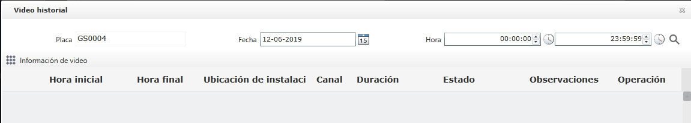
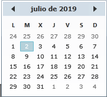
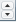

Configuración de tiempo
Algunas funciones de la plataforma de administración de seguridad del transporte público deben configurar la fecha y la hora
como las condiciones filtradas de consultas.
La configuración de tiempo de la interfaz de video histórica del vehículo se toma como un ejemplo para la descripción.

Fig 18 Video histórico del vehículo
| 1. | Para configurar la fecha, actualmente hay dos formas de hacerlo: ingrese manualmente la fecha en el cuadro de texto “Fecha” por formato de fecha; o haga clic en el icono después del cuadro de texto “Fecha” para expandir el calendario 〖 
Fig 19 Configuración de trayectoria historial |
| 2. | Configuración de hora, actualmente admite tres formas: (1) Ingrese manualmente la hora según su formato en el cuadro de texto de “Hora”;
(2) Haga clic en el botón 〖〗 en el cuadro de texto de “Hora” para ajustarlo a un punto de tiempo específico;
(3) Haga clic en el icono 〖
|